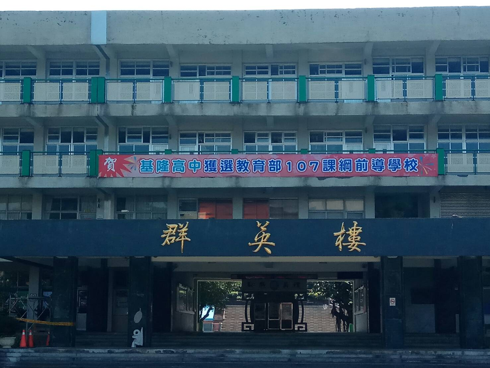

除了體育組和設備組之外，幾乎所有的行政人員都在一樓了，
正面外圍有兩小塊草皮，上面種了幾棵會開花的小樹，其他則是櫻花樹，
中間的穿堂貼了很多海報，之前無意間還看到學校把預算、支出之類的報表也都貼上來了，看起來頗透明。
二樓中間則是校長辦公室大約佔了兩個教室的大小，剩下兩邊的空間全部都是老師辦公室。
三樓是普通高三生的所在地，不管一、二年級的時候是在明德樓或是至善樓，三年級之後都會統一搬到這裡來，以上是群的部分。
四樓是學科能力分班的一到三年級定居的地方，基本上不被退班的話就是住在這裡三年了，
8個班級剛好填滿一整排的教室，這一層樓代表是英的部份。
點擊我回到上一頁